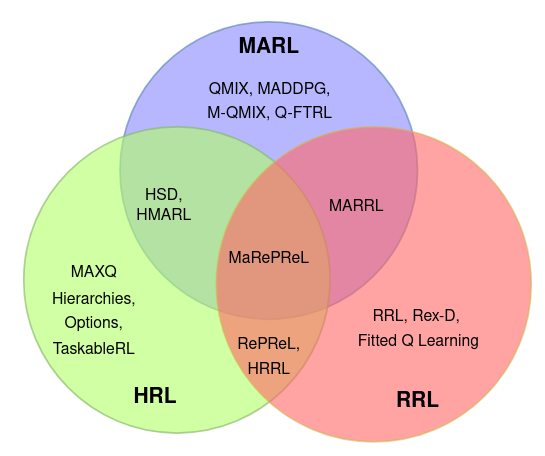

MaRePReL
Nikhilesh Prabhakar, Ranveer Singh, Harsha Kokel, Sriraam Natarajan, Prasad Tadepalli · AAMAS 2025
Multiagent Reinforcement Learning (MARL) introduces several challenges to sequential-decision making problems, including the curse of dimensionality dealing with an exponential state and action space, non-stationarity of the environment and credit assignment. When we include the added complexity of relational domains meant to learn policies that are generalizable to an increasing number of objects and tasks, traditioal MARL approaches are incapable of learning and scaling efficiently. Our work on Combining Planning and Reinforcement Learning for Solving Relational Multiagent Domains introduces a novel framework MaRePReL (Multiagent Relational Planning and Reinforcement Learning) that is designed to address these challenges by integrating hierarchical relational planning with reinforcement learning. This work extends to original RePReL framework to handle domains with multiple agents. Here's how MaRePReL tackles problems in goal-directed relational domains.
MARePReL
The following is the architecture for the

MaRePReL Architecture
MaRePReL (Multiagent Relational Planning and Reinforcement Learning) is a novel framework designed to address these challenges by integrating hierarchical relational planning with reinforcement learning. Here's how MaRePReL tackles the key issues in MARL:
- Relational Planner as a Centralized Controller. Instead of treating the entire problem space as a monolithic entity, MaRePReL employs a relational hierarchical planner to decompose tasks into structured sub-tasks. This helps manage the exponential state-action complexity by breaking the problem into smaller, more manageable units.
- Handling Non-Stationarity Through Task Distribution. The planner in MaRePReL acts as a centralized controller, ensuring that agents receive well-defined, non-overlapping tasks. By structuring interactions, MaRePReL reduces the chaotic nature of multiagent interactions and mitigates non-stationarity, leading to more stable learning.
- Improving Sample Efficiency with Abstraction Reasoning. Inspired by the work in RePReL, MaRePReL also incorporates domain knowledge represented in the form of Dynamic First-Order Conditional Influence (D-FOCI) statements to extract only the most relevant state features needed for each agent's sub-task. This helps reduce the number of samples required for training, enabling efficient learning in complex environments.
- Enhancing Generalization Across Tasks Through Task Specific Lower-Level Policies. Once abstracted, multiple lower level reinforcement learning policies to learn how to act in different tasks in the abstract state space for different agents.
Related Work

MaRePReL w.r.t existing literature on relational, hierarchical, and multiagent RL.
An ideal RL framewrok should be able to not only handle the rich relational structure of the domain but also have the ability to represent and reason with the decomposition of complex tasks into smaller ones. In other words, the algorithm must be capable of representing and reasoning with both hierarchies and relational structures. RePReL, employs a hierarchical relational planner to implement task-specific policies and uses Deep RL to work on hybrid relational domains. However, while RePReL framework successfully handled relations and hierarchies in continuous spaces, it can not handle multiagent systems. More precisely, given the three-pronged challenge of complex task structures, rich object-centric environments, and multiagent domains, several advances have been made in each of these specific directions in the areas of hierarchical reinforcement learning (HRL), Relationala Reinforcement Learning (RRL) and Multiagent Reinforcement Learning (MARL). Also, in the recent past, methods that arise from the combinations of these methods as seen in the figure. However, no significant research encompasses all three of these challenges.
Citation
@inproceedings{PrabhakarAAMAS25,
title={Combining Planning and Reinforcement Learning for Solving Relational Multiagent Domains},
author={Nikhilesh Prabhakar and Ranveer Singh and Harsha Kokel and Sriraam Natarajan and Prasad Tadepalli},
booktitle={The 24th International Conference on Autonomous Agents and Multi-Agent Systems (AAMAS)},
year={2022}
}
Acknowledgements
NP, RS, and SN gratefully acknowledge the support of ARO award W911NF2010224. PT gratefully acknowledges the support of ARO award W911NF2210251. The views and conclusions contained herein are those of the authors and should not be interpreted as necessarily representing the official policies or endorsements, either expressed or implied, of ARO or the U.S. government.